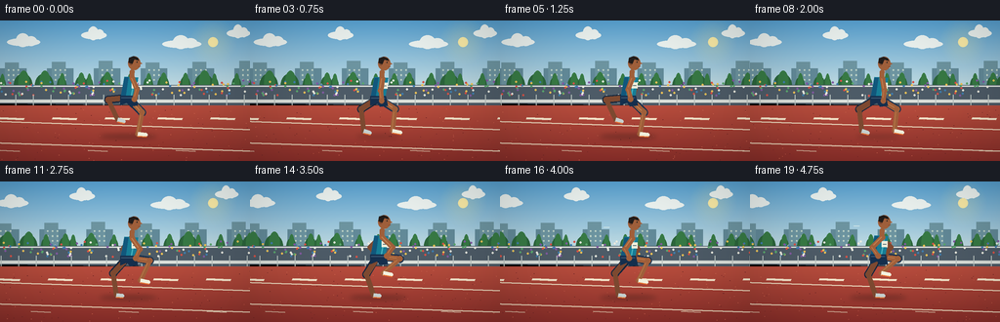
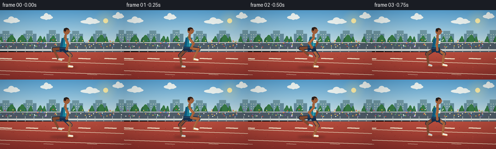

CODING AGENTS AS PIXEL WORLD MODELS
traex/GPT-5.6-Sol · motion_rationality_0035
点击播放 · 原生 RGB 像素
逐轮保存的候选
回放视频、检查图与代码变化。
每份候选均可单独播放。实际图片检查记录在下方工具轨迹中。
候选 01播放与检查图
点击播放 · 原生 RGB 像素


展开代码变化
--- 上一保存版本
+++ 本次保存版本
@@ -0,0 +1,255 @@
+from pathlib import Path
+import math
+import numpy as np
+from PIL import Image, ImageDraw, ImageFilter
+import artifact_io
+
+# Text-to-video procedural illustration: a side-tracking stadium shot.
+W, H, N = 256, 144, 20
+S = 3
+rng = np.random.default_rng(35)
+
+def sc(v): return int(round(v*S))
+def pts(seq): return [(sc(x), sc(y)) for x,y in seq]
+
+def ellipse(d, box, fill, outline=None, width=1):
+ d.ellipse(tuple(sc(v) for v in box), fill=fill, outline=outline, width=sc(width) if outline else 1)
+
+def rect(d, box, fill, outline=None, width=1):
+ d.rectangle(tuple(sc(v) for v in box), fill=fill, outline=outline, width=sc(width) if outline else 1)
+
+def poly(d, xy, fill, outline=None): d.polygon(pts(xy), fill=fill, outline=outline)
+
+def line(d, xy, fill, width): d.line(pts(xy), fill=fill, width=sc(width), joint='curve')
+
+def capsule(d, a, b, color, width, highlight=None):
+ line(d, [a,b], color, width)
+ r=width/2
+ ellipse(d,(a[0]-r,a[1]-r,a[0]+r,a[1]+r),color)
+ ellipse(d,(b[0]-r,b[1]-r,b[0]+r,b[1]+r),color)
+ if highlight:
+ # narrow upper-left light catching the limb
+ line(d, [(a[0]-.8,a[1]-.5),(b[0]-.8,b[1]-.5)], highlight, max(0.6,width*.16))
+
+def mix(a,b,t): return tuple(int(a[i]*(1-t)+b[i]*t) for i in range(3))
+
+# Fixed decorative samples, shifted with the panning camera.
+clouds=[(24,18,17),(96,11,13),(186,20,20),(244,9,12),(310,17,18)]
+trees=[(i*18+float(rng.uniform(-5,5)), float(rng.uniform(4,10))) for i in range(20)]
+crowd=[]
+colors=[(239,194,87),(64,126,174),(215,83,72),(235,235,224),(91,167,111),(131,91,162)]
+for i in range(180):
+ crowd.append((float(rng.uniform(0,380)), float(rng.uniform(61,77)), colors[i%len(colors)]))
+
+# Inverse kinematics for a bent running leg.
+def leg_joints(hip, phase):
+ # Stance foot moves backwards relative to the athlete; swing foot recovers in an arc.
+ if phase < .44:
+ u=phase/.44
+ ax=hip[0] + (16 - 32*u)
+ ay=116.0
+ else:
+ u=(phase-.44)/.56
+ smooth=u*u*(3-2*u)
+ ax=hip[0] + (-16 + 32*smooth)
+ ay=116.0 - 23*math.sin(math.pi*u)**1.15
+ ay += 0.35*math.sin(phase*2*math.pi)
+ Hx,Hy=hip; dx=ax-Hx; dy=ay-Hy; dist=max(2,math.hypot(dx,dy))
+ L1,L2=21.5,22.5
+ dist=min(dist,L1+L2-.1)
+ ux,uy=dx/dist,dy/dist
+ aa=(L1*L1-L2*L2+dist*dist)/(2*dist)
+ hh=math.sqrt(max(.1,L1*L1-aa*aa))
+ bx,by=Hx+aa*ux,Hy+aa*uy
+ nx,ny=-uy,ux
+ c1=(bx+hh*nx,by+hh*ny); c2=(bx-hh*nx,by-hh*ny)
+ # Knee bends in direction of travel for the forward leg and backward for trailing leg.
+ desired=1 if ax>=Hx else -1
+ knee=max((c1,c2), key=lambda q: desired*(q[0]-Hx))
+ return knee,(ax,ay), phase<.44
+
+def arm_joints(shoulder, swing):
+ # Bent elbows and opposite arm/leg drive.
+ ex=shoulder[0]+10.5*swing
+ ey=shoulder[1]+10.2+2.0*(1-abs(swing))
+ hx=shoulder[0]+4.5*swing
+ hy=shoulder[1]+23.0-4.0*abs(swing)
+ return (ex,ey),(hx,hy)
+
+def draw_background(im, frame):
+ d=ImageDraw.Draw(im)
+ # Rich dawn/afternoon sky gradient.
+ arr=np.asarray(im).copy()
+ top=np.array((89,164,213),dtype=float); bot=np.array((220,234,230),dtype=float)
+ for y in range(sc(84)):
+ t=y/max(1,sc(84)-1)
+ arr[y,:,:3]=top*(1-t)+bot*t
+ im.paste(Image.fromarray(arr.astype(np.uint8)))
+ d=ImageDraw.Draw(im)
+ # Sun glow.
+ glow=Image.new('RGBA',im.size,(0,0,0,0)); gd=ImageDraw.Draw(glow)
+ for r in range(25,2,-2):
+ alpha=int(2.5*(26-r))
+ gd.ellipse((sc(218-r),sc(22-r),sc(218+r),sc(22+r)),fill=(255,235,151,min(40,alpha)))
+ im.alpha_composite(glow)
+ d=ImageDraw.Draw(im)
+ ellipse(d,(213,17,223,27),(255,239,170,255))
+ # Clouds pan slowly left.
+ shift=(frame*1.1)%70
+ for x,y,r in clouds:
+ xx=x-shift
+ while xx < -35: xx += 350
+ col=(240,247,244,185)
+ ellipse(d,(xx-r,y,xx+r,y+8),col)
+ ellipse(d,(xx-r*.45,y-5,xx+r*.35,y+9),col)
+ ellipse(d,(xx+r*.1,y-2,xx+r*.8,y+8),col)
+ # Distant city silhouettes.
+ city_shift=(frame*.7)%60
+ for k in range(-1,7):
+ x=k*48-city_shift
+ h=10+(k%3)*4
+ rect(d,(x,49,x+27,70),(99,139,154,255))
+ rect(d,(x+5,45-h*.2,x+19,70),(110,150,162,255))
+ for wy in range(50,65,5):
+ for wx in range(int(x+8),int(x+19),5):
+ rect(d,(wx,wy,wx+1.2,wy+1.5),(194,214,201,210))
+ # Tree belt.
+ tree_shift=(frame*1.5)%72
+ rect(d,(0,68,256,85),(63,111,72,255))
+ for x,r in trees:
+ xx=(x-tree_shift)%360-30
+ ellipse(d,(xx-r,61-r*.7,xx+r,78),(44,102,60,255))
+ ellipse(d,(xx-r*.5,57-r*.6,xx+r*.65,75),(56,123,69,255))
+ # Stadium stand and crowd.
+ poly(d,[(0,66),(256,66),(256,88),(0,85)],(78,92,104,255))
+ line(d,[(0,67),(256,67)],(226,231,225,255),1.2)
+ cshift=(frame*2.1)%124
+ for x,y,c in crowd:
+ xx=(x-cshift)%380-30
+ if 0<=xx<256:
+ ellipse(d,(xx-1,y-1,xx+1,y+1),c+(255,))
+ # Rail/fence gives strong horizontal parallax.
+ rect(d,(0,81,256,84),(221,226,220,255))
+ for x in range(-20,280,18):
+ xx=x-(frame*3)%18
+ line(d,[(xx,76),(xx,94)],(188,198,194,255),1)
+ line(d,[(0,91),(256,91)],(178,189,184,255),1)
+ # Track surface gradient.
+ poly(d,[(0,87),(256,87),(256,144),(0,144)],(174,66,53,255))
+ for y in range(87,144):
+ t=(y-87)/57
+ col=mix((185,78,62),(139,47,42),t)
+ rect(d,(0,y,256,y+1),col+(255,))
+ # Fine track granules.
+ local=np.random.default_rng(900+frame)
+ for _ in range(100):
+ x=float(local.uniform(0,256)); y=float(local.uniform(90,143))
+ c=(205,98,76,90) if local.random()>.5 else (112,38,38,65)
+ ellipse(d,(x,y,x+.45,y+.35),c)
+ # Perspective lane separators, subtly translating left.
+ offset=(frame*5.3)%64
+ for base in [106,128,151]:
+ line(d,[(-40,base-4),(300,base+7)],(238,220,192,245),1.35)
+ # Dashed inner marker line indicates forward travel.
+ for k in range(-2,7):
+ x=k*54-offset
+ poly(d,[(x,99),(x+25,100),(x+24,102),(x-1,101)],(247,231,204,235))
+ # Foreground lane numbers/marks pan by.
+ for k in range(-1,5):
+ x=k*90-(frame*5.3)%90
+ line(d,[(x,133),(x+20,134)],(224,198,173,120),1)
+
+def draw_runner(im, frame):
+ d=ImageDraw.Draw(im)
+ # phase produces 6 coherent running cycles across five seconds.
+ phase=(frame*.30+.07)%1.0
+ bob=1.4*math.cos(phase*4*math.pi)
+ lean=3.0
+ hip=(131.0,78.0+bob)
+ shoulder=(134.5,57.5+bob)
+ # Contact shadow changes during flight/contact.
+ lK,lA,lstance=leg_joints((hip[0]-1,hip[1]),phase)
+ rphase=(phase+.5)%1
+ rK,rA,rstance=leg_joints((hip[0]+1,hip[1]),rphase)
+ airborne=not (lstance or rstance)
+ shadow_w=22 if airborne else 29
+ shadow=Image.new('RGBA',im.size,(0,0,0,0)); sd=ImageDraw.Draw(shadow)
+ sd.ellipse((sc(131-shadow_w),sc(116.5),sc(131+shadow_w),sc(121)),fill=(45,25,25,80 if not airborne else 48))
+ shadow=shadow.filter(ImageFilter.GaussianBlur(sc(2.2)))
+ im.alpha_composite(shadow); d=ImageDraw.Draw(im)
+
+ skin_back=(126,74,49,255); skin=(161,96,59,255); skin_hi=(193,126,77,255)
+ navy_back=(20,38,61,255); navy=(22,48,78,255)
+ shoe_back=(201,212,211,255); shoe=(245,245,225,255)
+ # Determine depth by phase: limb with more forward foot is foreground.
+ legs=[('L',lK,lA,lstance,phase),('R',rK,rA,rstance,rphase)]
+ legs.sort(key=lambda q:q[2][0])
+ # rear leg first
+ for idx,(name,knee,ankle,stance,ph) in enumerate(legs):
+ front=idx==1
+ sk=skin if front else skin_back; shorts=navy if front else navy_back
+ # shorts portion upper thigh
+ capsule(d,(hip[0]+(-1 if name=='L' else 1),hip[1]),knee,shorts,8.2)
+ # exposed thigh begins below shorts hem
+ t0=(hip[0]*.70+knee[0]*.30, hip[1]*.70+knee[1]*.30)
+ capsule(d,t0,knee,sk,6.1, skin_hi if front else None)
+ capsule(d,knee,ankle,sk,5.0, skin_hi if front else None)
+ ellipse(d,(knee[0]-3,knee[1]-3,knee[0]+3,knee[1]+3),sk)
+ # Sport shoe points in direction of travel during contact/swing.
+ toe=(ankle[0]+(8 if ankle[0]>=hip[0]-4 else 6), ankle[1]+(.7 if stance else 1.8))
+ line(d,[ankle,toe],shoe if front else shoe_back,4.6)
+ ellipse(d,(toe[0]-2,toe[1]-2,toe[0]+2,toe[1]+2),shoe if front else shoe_back)
+ line(d,[(ankle[0],ankle[1]+2.1),(toe[0]+1,toe[1]+2.0)],(235,117,51,255),1.2)
+ # Rear arm (opposes rear/front leg), then torso.
+ arm_s=math.sin(2*math.pi*phase)
+ arms=[(-arm_s,False),(arm_s,True)]
+ # back arm muted
+ e,h=arm_joints((shoulder[0]-1,shoulder[1]+1),arms[0][0])
+ capsule(d,(shoulder[0]-1,shoulder[1]+1),e,skin_back,5.2)
+ capsule(d,e,h,skin_back,4.5)
+ ellipse(d,(h[0]-2.7,h[1]-2.7,h[0]+2.7,h[1]+2.7),skin_back)
+ # Torso singlet, visibly forward leaning.
+ poly(d,[(shoulder[0]-7,shoulder[1]-1),(shoulder[0]+7,shoulder[1]),(hip[0]+7,hip[1]+3),(hip[0]-8,hip[1]+2)],(24,126,151,255))
+ # side panel and fabric highlight
+ poly(d,[(shoulder[0]-7,shoulder[1]),(shoulder[0]-3,shoulder[1]),(hip[0]-3,hip[1]+2),(hip[0]-8,hip[1]+2)],(18,88,125,255))
+ line(d,[(shoulder[0]+3,shoulder[1]+2),(hip[0]+3,hip[1]-1)],(70,178,190,255),1.2)
+ # Shorts silhouette and waistband.
+ poly(d,[(hip[0]-8,hip[1]-2),(hip[0]+8,hip[1]-2),(hip[0]+10,hip[1]+8),(hip[0]+2,hip[1]+9),(hip[0]-1,hip[1]+5),(hip[0]-8,hip[1]+8)],navy)
+ line(d,[(hip[0]-7,hip[1]),(hip[0]+7,hip[1])],(62,91,118,255),1)
+ # Bib establishes athletic context.
+ rect(d,(shoulder[0]+.2,shoulder[1]+5,shoulder[0]+6.2,shoulder[1]+11),(238,239,220,255))
+ line(d,[(shoulder[0]+1.5,shoulder[1]+8),(shoulder[0]+5,shoulder[1]+8)],(53,78,88,255),.65)
+ # Neck and head profile.
+ capsule(d,(shoulder[0]+.5,shoulder[1]-1),(shoulder[0]+.6,shoulder[1]-6),skin,5)
+ head=(137.5,43.0+bob)
+ ellipse(d,(head[0]-6.4,head[1]-7.2,head[0]+6.2,head[1]+6.7),skin)
+ # Face points right: nose, ear, eye.
+ poly(d,[(head[0]+5,head[1]-2),(head[0]+8.2,head[1]),(head[0]+5.3,head[1]+1.2)],skin)
+ ellipse(d,(head[0]-5.2,head[1]-1.4,head[0]-2.3,head[1]+1.7),(133,76,49,255))
+ ellipse(d,(head[0]+2.3,head[1]-2.0,head[0]+3.3,head[1]-1.0),(31,31,29,255))
+ line(d,[(head[0]+4.2,head[1]+3.0),(head[0]+6.1,head[1]+2.8)],(108,53,44,255),.7)
+ # Close-cropped dark hair follows skull.
+ poly(d,[(head[0]-6.1,head[1]-1),(head[0]-5.5,head[1]-6),(head[0]-1,head[1]-7.4),(head[0]+3.5,head[1]-5.8),(head[0]+4.5,head[1]-3),(head[0],head[1]-4.2),(head[0]-2,head[1]+.5)],(35,29,27,255))
+ # Foreground arm last for readable stride.
+ e,h=arm_joints((shoulder[0]+1,shoulder[1]+1),arms[1][0])
+ capsule(d,(shoulder[0]+1,shoulder[1]+1),e,skin,5.5,skin_hi)
+ capsule(d,e,h,skin,4.6,skin_hi)
+ ellipse(d,(h[0]-2.8,h[1]-2.8,h[0]+2.8,h[1]+2.8),skin)
+ # Tiny sweat / speed flecks behind athlete, restrained.
+ if frame%3==1:
+ line(d,[(112,47+bob),(106,47+bob)],(220,238,236,120),.7)
+
+def make_frame(i):
+ im=Image.new('RGBA',(W*S,H*S),(0,0,0,255))
+ draw_background(im,i)
+ draw_runner(im,i)
+ # cinematic vignette and antialiased reduction
+ rgb=im.convert('RGB').resize((W,H),Image.Resampling.LANCZOS)
+ a=np.asarray(rgb).astype(np.float32)
+ yy,xx=np.mgrid[0:H,0:W]
+ vign=np.clip(1-0.10*((xx-W/2)/(W/2))**2-0.07*((yy-H/2)/(H/2))**2,.84,1)
+ a*=vign[...,None]
+ return np.clip(a,0,255).astype(np.uint8)
+
+frames=np.stack([make_frame(i) for i in range(N)])
+artifact_io.save(frames, Path(__file__).resolve().parent)
可观测工具轨迹
实际执行的命令与返回图片。
命令 1exit 0
/bin/bash -lc "cat prompt.txt && printf '\\n---RULES---\\n' && cat GENERATION_RULES.md && printf '\\n---SPEC---\\n' && cat task_spec.json"
命令 2exit 0
/bin/bash -lc "find . -maxdepth 2 -type f -printf '%p\\n' | sort && printf '\\n---TOOLS---\\n' && which ffmpeg || true && which python3 || true"
命令 3exit 0
/bin/bash -lc 'cat artifact_io.py'
命令 4exit 2
/bin/bash -lc "cat > generate.py <<'PY'
from pathlib import Path
import math
import numpy as np
from PIL import Image, ImageDraw, ImageFilter
import artifact_io
# Text-to-video procedural illustration: a side-tracking stadium shot.
W, H, N = 256, 144, 20
S = 3
rng = np.random.default_rng(35)
def sc(v): return int(round(v*S))
def pts(seq): return [(sc(x), sc(y)) for x,y in seq]
def ellipse(d, box, fill, outline=None, width=1):
d.ellipse(tuple(sc(v) for v in box), fill=fill, outline=outline, width=sc(width) if outline else 1)
def rect(d, box, fill, outline=None, width=1):
d.rectangle(tuple(sc(v) for v in box), fill=fill, outline=outline, width=sc(width) if outline else 1)
def poly(d, xy, fill, outline=None): d.polygon(pts(xy), fill=fill, outline=outline)
def line(d, xy, fill, width): d.line(pts(xy), fill=fill, width=sc(width), joint='curve')
def capsule(d, a, b, color, width, highlight=None):
line(d, [a,b], color, width)
r=width/2
ellipse(d,(a[0]-r,a[1]-r,a[0]+r,a[1]+r),color)
ellipse(d,(b[0]-r,b[1]-r,b[0]+r,b[1]+r),color)
if highlight:
# narrow upper-left light catching the limb
line(d, [(a[0]-.8,a[1]-.5),(b[0]-.8,b[1]-.5)], highlight, max(0.6,width*.16))
def mix(a,b,t): return tuple(int(a[i]*(1-t)+b[i]*t) for i in range(3))
# Fixed decorative samples, shifted with the panning camera.
clouds=[(24,18,17),(96,11,13),(186,20,20),(244,9,12),(310,17,18)]
trees=[(i*18+float(rng.uniform(-5,5)), float(rng.uniform(4,10))) for i in range(20)]
crowd=[]
colors=[(239,194,87),(64,126,174),(215,83,72),(235,235,224),(91,167,111),(131,91,162)]
for i in range(180):
crowd.append((float(rng.uniform(0,380)), float(rng.uniform(61,77)), colors[i%len(colors)]))
# Inverse kinematics for a bent running leg.
def leg_joints(hip, phase):
# Stance foot moves backwards relative to the athlete; swing foot recovers in an arc.
if phase < .44:
u=phase/.44
ax=hip[0] + (16 - 32*u)
ay=116.0
else:
u=(phase-.44)/.56
smooth=u*u*(3-2*u)
ax=hip[0] + (-16 + 32*smooth)
ay=116.0 - 23*math.sin(math.pi*u)**1.15
ay += 0.35*math.sin(phase*2*math.pi)
Hx,Hy=hip; dx=ax-Hx; dy=ay-Hy; dist=max(2,math.hypot(dx,dy))
L1,L2=21.5,22.5
dist=min(dist,L1+L2-.1)
ux,uy=dx/dist,dy/dist
aa=(L1*L1-L2*L2+dist*dist)/(2*dist)
hh=math.sqrt(max(.1,L1*L1-aa*aa))
bx,by=Hx+aa*ux,Hy+aa*uy
nx,ny=-uy,ux
c1=(bx+hh*nx,by+hh*ny); c2=(bx-hh*nx,by-hh*ny)
# Knee bends in direction of travel for the forward leg and backward for trailing leg.
desired=1 if ax>=Hx else -1
knee=max((c1,c2), key=lambda q: desired*(q[0]-Hx))
return knee,(ax,ay), phase<.44
def arm_joints(shoulder, swing):
# Bent elbows and opposite arm/leg drive.
ex=shoulder[0]+10.5*swing
ey=shoulder[1]+10.2+2.0*(1-abs(swing))
hx=shoulder[0]+4.5*swing
hy=shoulder[1]+23.0-4.0*abs(swing)
return (ex,ey),(hx,hy)
def draw_background(im, frame):
d=ImageDraw.Draw(im)
# Rich dawn/afternoon sky gradient.
arr=np.asarray(im)
top=np.array((89,164,213),dtype=float); bot=np.array((220,234,230),dtype=float)
for y in range(sc(84)):
t=y/max(1,sc(84)-1)
arr[y,:,:]=top*(1-t)+bot*t
im.paste(Image.fromarray(arr.astype(np.uint8)))
d=ImageDraw.Draw(im)
# Sun glow.
glow=Image.new('RGBA',im.size,(0,0,0,0)); gd=ImageDraw.Draw(glow)
for r in range(25,2,-2):
alpha=int(2.5*(26-r))
gd.ellipse((sc(218-r),sc(22-r),sc(218+r),sc(22+r)),fill=(255,235,151,min(40,alpha)))
im.alpha_composite(glow)
d=ImageDraw.Draw(im)
ellipse(d,(213,17,223,27),(255,239,170,255))
# Clouds pan slowly left.
shift=(frame*1.1)%70
for x,y,r in clouds:
xx=x-shift
while xx < -35: xx += 350
col=(240,247,244,185)
ellipse(d,(xx-r,y,xx+r,y+8),col)
ellipse(d,(xx-r*.45,y-5,xx+r*.35,y+9),col)
ellipse(d,(xx+r*.1,y-2,xx+r*.8,y+8),col)
# Distant city silhouettes.
city_shift=(frame*.7)%60
for k in range(-1,7):
x=k*48-city_shift
h=10+(k%3)*4
rect(d,(x,49,x+27,70),(99,139,154,255))
rect(d,(x+5,45-h*.2,x+19,70),(110,150,162,255))
for wy in range(50,65,5):
for wx in range(int(x+8),int(x+19),5):
rect(d,(wx,wy,wx+1.2,wy+1.5),(194,214,201,210))
# Tree belt.
tree_shift=(frame*1.5)%72
rect(d,(0,68,256,85),(63,111,72,255))
for x,r in trees:
xx=(x-tree_shift)%360-30
ellipse(d,(xx-r,61-r*.7,xx+r,78),(44,102,60,255))
ellipse(d,(xx-r*.5,57-r*.6,xx+r*.65,75),(56,123,69,255))
# Stadium stand and crowd.
poly(d,[(0,66),(256,66),(256,88),(0,85)],(78,92,104,255))
line(d,[(0,67),(256,67)],(226,231,225,255),1.2)
cshift=(frame*2.1)%124
for x,y,c in crowd:
xx=(x-cshift)%380-30
if 0<=xx<256:
ellipse(d,(xx-1,y-1,xx+1,y+1),c+(255,))
# Rail/fence gives strong horizontal parallax.
rect(d,(0,81,256,84),(221,226,220,255))
for x in range(-20,280,18):
xx=x-(frame*3)%18
line(d,[(xx,76),(xx,94)],(188,198,194,255),1)
line(d,[(0,91),(256,91)],(178,189,184,255),1)
# Track surface gradient.
poly(d,[(0,87),(256,87),(256,144),(0,144)],(174,66,53,255))
for y in range(87,144):
t=(y-87)/57
col=mix((185,78,62),(139,47,42),t)
rect(d,(0,y,256,y+1),col+(255,))
# Fine track granules.
local=np.random.default_rng(900+frame)
for _ in range(100):
x=float(local.uniform(0,256)); y=float(local.uniform(90,143))
c=(205,98,76,90) if local.random()>.5 else (112,38,38,65)
ellipse(d,(x,y,x+.45,y+.35),c)
# Perspective lane separators, subtly translating left.
offset=(frame*5.3)%64
for base in [106,128,151]:
line(d,[(-40,base-4),(300,base+7)],(238,220,192,245),1.35)
# Dashed inner marker line indicates forward travel.
for k in range(-2,7):
x=k*54-offset
poly(d,[(x,99),(x+25,100),(x+24,102),(x-1,101)],(247,231,204,235))
# Foreground lane numbers/marks pan by.
for k in range(-1,5):
x=k*90-(frame*5.3)%90
line(d,[(x,133),(x+20,134)],(224,198,173,120),1)
def draw_runner(im, frame):
d=ImageDraw.Draw(im)
# phase produces 6 coherent running cycles across five seconds.
phase=(frame*.30+.07)%1.0
bob=1.4*math.cos(phase*4*math.pi)
lean=3.0
hip=(131.0,78.0+bob)
shoulder=(134.5,57.5+bob)
# Contact shadow changes during flight/contact.
lK,lA,lstance=leg_joints((hip[0]-1,hip[1]),phase)
rphase=(phase+.5)%1
rK,rA,rstance=leg_joints((hip[0]+1,hip[1]),rphase)
airborne=not (lstance or rstance)
shadow_w=22 if airborne else 29
shadow=Image.new('RGBA',im.size,(0,0,0,0)); sd=ImageDraw.Draw(shadow)
sd.ellipse((sc(131-shadow_w),sc(116.5),sc(131+shadow_w),sc(121)),fill=(45,25,25,80 if not airborne else 48))
shadow=shadow.filter(ImageFilter.GaussianBlur(sc(2.2)))
im.alpha_composite(shadow); d=ImageDraw.Draw(im)
skin_back=(126,74,49,255); skin=(161,96,59,255); skin_hi=(193,126,77,255)
navy_back=(20,38,61,255); navy=(22,48,78,255)
shoe_back=(201,212,211,255); shoe=(245,245,225,255)
# Determine depth by phase: limb with more forward foot is foreground.
legs=[('L',lK,lA,lstance,phase),('R',rK,rA,rstance,rphase)]
legs.sort(key=lambda q:q[2][0])
# rear leg first
for idx,(name,knee,ankle,stance,ph) in enumerate(legs):
front=idx==1
sk=skin if front else skin_back; shorts=navy if front else navy_back
# shorts portion upper thigh
capsule(d,(hip[0]+(-1 if name=='L' else 1),hip[1]),knee,shorts,8.2)
# exposed thigh begins below shorts hem
t0=(hip[0]*.70+knee[0]*.30, hip[1]*.70+knee[1]*.30)
capsule(d,t0,knee,sk,6.1, skin_hi if front else None)
capsule(d,knee,ankle,sk,5.0, skin_hi if front else None)
ellipse(d,(knee[0]-3,knee[1]-3,knee[0]+3,knee[1]+3),sk)
# Sport shoe points in direction of travel during contact/swing.
toe=(ankle[0]+(8 if ankle[0]>=hip[0]-4 else 6), ankle[1]+(.7 if stance else 1.8))
line(d,[ankle,toe],shoe if front else shoe_back,4.6)
ellipse(d,(toe[0]-2,toe[1]-2,toe[0]+2,toe[1]+2),shoe if front else shoe_back)
line(d,[(ankle[0],ankle[1]+2.1),(toe[0]+1,toe[1]+2.0)],(235,117,51,255),1.2)
# Rear arm (opposes rear/front leg), then torso.
arm_s=math.sin(2*math.pi*phase)
arms=[(-arm_s,False),(arm_s,True)]
# back arm muted
e,h=arm_joints((shoulder[0]-1,shoulder[1]+1),arms[0][0])
capsule(d,(shoulder[0]-1,shoulder[1]+1),e,skin_back,5.2)
capsule(d,e,h,skin_back,4.5)
ellipse(d,(h[0]-2.7,h[1]-2.7,h[0]+2.7,h[1]+2.7),skin_back)
# Torso singlet, visibly forward leaning.
poly(d,[(shoulder[0]-7,shoulder[1]-1),(shoulder[0]+7,shoulder[1]),(hip[0]+7,hip[1]+3),(hip[0]-8,hip[1]+2)],(24,126,151,255))
# side panel and fabric highlight
poly(d,[(shoulder[0]-7,shoulder[1]),(shoulder[0]-3,shoulder[1]),(hip[0]-3,hip[1]+2),(hip[0]-8,hip[1]+2)],(18,88,125,255))
line(d,[(shoulder[0]+3,shoulder[1]+2),(hip[0]+3,hip[1]-1)],(70,178,190,255),1.2)
# Shorts silhouette and waistband.
poly(d,[(hip[0]-8,hip[1]-2),(hip[0]+8,hip[1]-2),(hip[0]+10,hip[1]+8),(hip[0]+2,hip[1]+9),(hip[0]-1,hip[1]+5),(hip[0]-8,hip[1]+8)],navy)
line(d,[(hip[0]-7,hip[1]),(hip[0]+7,hip[1])],(62,91,118,255),1)
# Bib establishes athletic context.
rect(d,(shoulder[0]+.2,shoulder[1]+5,shoulder[0]+6.2,shoulder[1]+11),(238,239,220,255))
line(d,[(shoulder[0]+1.5,shoulder[1]+8),(shoulder[0]+5,shoulder[1]+8)],(53,78,88,255),.65)
# Neck and head profile.
capsule(d,(shoulder[0]+.5,shoulder[1]-1),(shoulder[0]+.6,shoulder[1]-6),skin,5)
head=(137.5,43.0+bob)
ellipse(d,(head[0]-6.4,head[1]-7.2,head[0]+6.2,head[1]+6.7),skin)
# Face points right: nose, ear, eye.
poly(d,[(head[0]+5,head[1]-2),(head[0]+8.2,head[1]),(head[0]+5.3,head[1]+1.2)],skin)
ellipse(d,(head[0]-5.2,head[1]-1.4,head[0]-2.3,head[1]+1.7),(133,76,49,255))
ellipse(d,(head[0]+2.3,head[1]-2.0,head[0]+3.3,head[1]-1.0),(31,31,29,255))
line(d,[(head[0]+4.2,head[1]+3.0),(head[0]+6.1,head[1]+2.8)],(108,53,44,255),.7)
# Close-cropped dark hair follows skull.
poly(d,[(head[0]-6.1,head[1]-1),(head[0]-5.5,head[1]-6),(head[0]-1,head[1]-7.4),(head[0]+3.5,head[1]-5.8),(head[0]+4.5,head[1]-3),(head[0],head[1]-4.2),(head[0]-2,head[1]+.5)],(35,29,27,255))
# Foreground arm last for readable stride.
e,h=arm_joints((shoulder[0]+1,shoulder[1]+1),arms[1][0])
capsule(d,(shoulder[0]+1,shoulder[1]+1),e,skin,5.5,skin_hi)
capsule(d,e,h,skin,4.6,skin_hi)
ellipse(d,(h[0]-2.8,h[1]-2.8,h[0]+2.8,h[1]+2.8),skin)
# Tiny sweat / speed flecks behind athlete, restrained.
if frame%3==1:
line(d,[(112,47+bob),(106,47+bob)],(220,238,236,120),.7)
def make_frame(i):
im=Image.new('RGBA',(W*S,H*S),(0,0,0,255))
draw_background(im,i)
draw_runner(im,i)
# cinematic vignette and antialiased reduction
rgb=im.convert('RGB').resize((W,H),Image.Resampling.LANCZOS)
a=np.asarray(rgb).astype(np.float32)
yy,xx=np.mgrid[0:H,0:W]
vign=np.clip(1-0.10*((xx-W/2)/(W/2))**2-0.07*((yy-H/2)/(H/2))**2,.84,1)
a*=vign[...,None]
return np.clip(a,0,255).astype(np.uint8)
frames=np.stack([make_frame(i) for i in range(N)])
artifact_io.save(frames, Path(__file__).resolve().parent)
PY
python3 generate.py
ls -lh pixels.npz index.html inspection.png frames/00.png frames/19.png"命令 5exit 2
/bin/bash -lc "python3 - <<'PY'
p='generate.py'
s=open(p).read().replace('arr=np.asarray(im)\\n top=', 'arr=np.asarray(im).copy()\\n top=')
open(p,'w').write(s)
PY
python3 generate.py
ls -lh pixels.npz index.html inspection.png frames/00.png frames/19.png"命令 6exit 0
/bin/bash -lc "python3 - <<'PY'
p='generate.py'; s=open(p).read(); s=s.replace('arr[y,:,:]=top*(1-t)+bot*t','arr[y,:,:3]=top*(1-t)+bot*t')
open(p,'w').write(s)
PY
python3 generate.py
ls -lh pixels.npz index.html inspection.png frames/00.png frames/19.png"命令 7exit 0
/bin/bash -lc "python3 - <<'PY'
import numpy as np
from PIL import Image
z=np.load('pixels.npz')['pixels']
print('packed tensor:',z.shape,z.dtype)
ims=np.stack([np.asarray(Image.open(f'frames/{i:02d}.png')) for i in range(20)])
print('frames:',ims.shape,ims.dtype,'range',ims.min(),ims.max())
print('mean frame deltas:',[round(float(np.abs(ims[i].astype(int)-ims[i-1]).mean()),2) for i in range(1,20)])
print('all RGB:', all(Image.open(f'frames/{i:02d}.png').mode=='RGB' for i in range(20)))
PY
python3 -m py_compile generate.py
find frames -type f | wc -l"保存候选 1 份；完成命令 7 次；可验证图片返回 0 张。原始 API 响应与完整日志保留在本地。